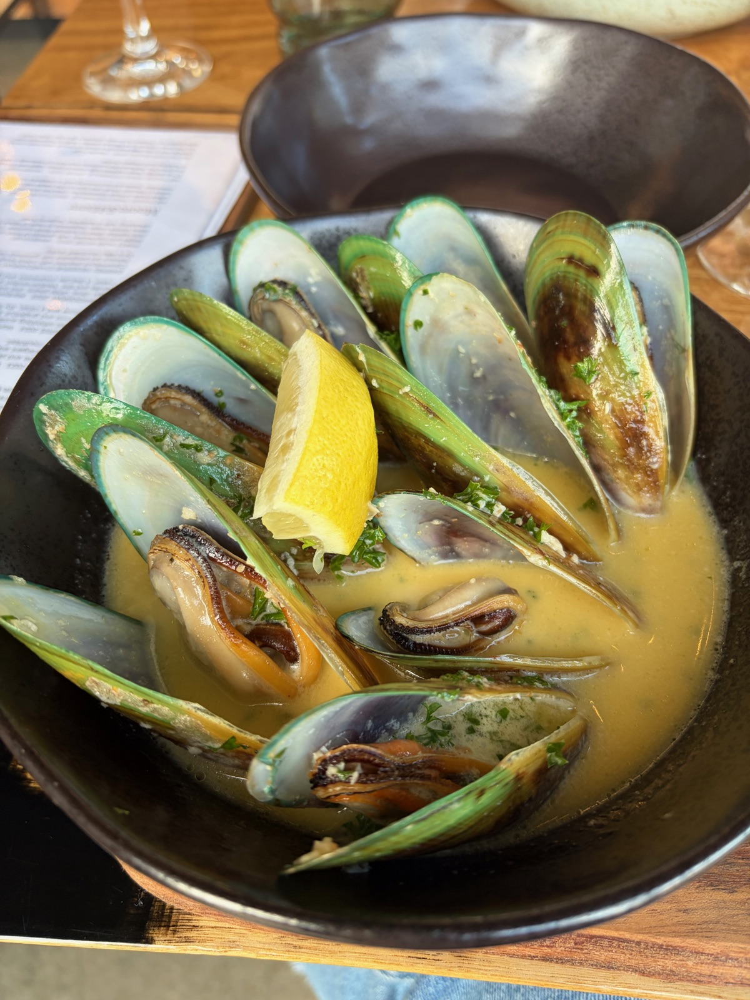

Aparthotel set among the vineyards of Rapaura, walking distance to cellar doors like Nautilus Estate. Spacious villas with full kitchens, jetted tubs, and vineyard views. Perfect base for cycling wine tours.
Italian (at The Fancy Cow) — GF clearly marked on menu
Celiac Bonus
Wine is naturally gluten-free, and Marlborough is one giant vineyard. Most cellar doors serve wine-focused menus with GF-friendly platters of local cheese, charcuterie, and seafood. This is one of the easiest wine regions in the world to eat safely as a celiac.
Score Breakdown
Dedicated GF restaurants
Menu labeling
Staff knowledge & safety
Density of GF dining
Grocery availability
7/10Overall GF Score
Easy
GF Friendly Restaurants & Cafes
11 spots
GF Score 3/5 Unclear Hotel
The Fancy Cow
GF Options
Italian / Wood-Fired Pizza
Went here
GF Score
Safety Notes
AMAZING! GF options clearly marked on menu. Italian restaurant with wood-fired pizza, pastas, and small plates. Went twice — that's how good it was. Amazing GF options, great environment, and close to where we stayed. Highland cattle (Fanta and Milo) in the paddock next door. Also home to Ant Moore Wines cellar door and DNA Brewery taproom.
What to Order
Wood-fired pizza (ask about GF base), traditional Italian pastas, small plates, and tiramisu. Pair with Ant Moore wines from the on-site cellar door or one of 12 DNA brews on tap.
Location
Rapaura · 309 Rapaura Rd

Harvest Restaurant
GF Options
New Zealand / Wine Country
Traveler recommended
GF Score
Safety Notes
GF clearly marked on menu. Set among the vineyards of the Wairau Valley with locally sourced ingredients. Elegant wine country dining with seasonal dishes.
What to Order
Seasonal dishes featuring Marlborough produce — green-lipped mussels, local salmon, vine-grown vegetables. Great wine list from the surrounding vineyards.
Breakfast spot with GF options close to the bike rental places. Good option to fuel up before a day of wine cycling.
What to Order
GF breakfast options, coffee, and brunch dishes. Check the daily specials board for additional GF choices.
Location
Renwick
Allan Scott Bistro
GF Options
New Zealand / Vineyard
Traveler recommended
Safety Notes
Vineyard bistro from one of Marlborough's pioneering winemakers. Casual outdoor dining among the vines with seasonal dishes using local ingredients.
Location
Wairau Valley · Jacksons Rd
Arbour Restaurant
GF Options
Fine Dining / Wine Country
Traveler recommended
Safety Notes
Acclaimed fine dining restaurant among the vineyards. Multi-course tasting menus using hyper-local Marlborough ingredients. Communicate celiac needs when booking — they adapt menus.
Location
Renwick
CBD Eatery
GF Options
Cafe
Traveler recommended
Safety Notes
Central Blenheim cafe with GF options. Good for a quick lunch stop in town between vineyard visits.
World-famous Sauvignon Blanc producer. Seated tastings last ~45 min ($30–$45 NZD). Light lunches available — in summer, Jack's Raw Bar serves freshly shucked Marlborough oysters and Cloudy Bay clams on the deck. Relax in hanging egg chairs among the vineyard views.
The only winery in New Zealand focused exclusively on premium Méthode Traditionelle sparkling wines. Founded by Daniel Le Brun, drawing on twelve generations of Champagne expertise. Complimentary tastings of the non-vintage range with an option to upgrade to Reserve selection. Beautiful cellar door with gifts and jewellery.
French-owned organic vineyard offering tastings with 6 Sauvignon Blancs side by side. A unique way to compare Marlborough terroir through multiple expressions of the same grape.
30–45 min
Traveler recommended
Spy Valley Wines
Tasting
Named after the nearby GCSB satellite intelligence station. Modern cellar door with award-winning wines across multiple varieties. Striking architecture in the Waihopai Valley.
30–45 min
Traveler recommended
Framingham Wines
Tasting
Boutique producer known for Riesling and aromatic white wines. Relaxed cellar door on Rapaura Road.
Rapaura Rd
Traveler recommended
Saint Clair Family Estate
Tasting + Kitchen
Large family-owned estate with a vineyard kitchen restaurant. Wine tasting paired with a full lunch menu using Marlborough produce. Popular cellar door on Rapaura Road.
1–2 hours
Traveler recommended
Activities & Experiences
Self-Guided Wine Cycling Tour
Rental
The best way to explore Marlborough's vineyards. Multiple operators offer full-day bike hire from ~$30 NZD with maps, helmet, and panniers. The terrain is flat, the biking is easy, and there are 30+ cellar doors along the designated cycle trail. E-bikes available. Most operators include free transport to/from Blenheim accommodation.
Something different from wine — local craft gin distillery with a tasting room. They have GF snacks on the menu, though the gin itself may not be fully GF-safe (check on arrival). Nice break between vineyards.
Rapaura Rd
Traveler recommended
Visited Researched Hotel
Getting Around
Bike
The best way to explore. Multiple operators in Renwick offer full-day bike hire with maps and free transport from Blenheim accommodation. The terrain is flat — easy cycling between 30+ cellar doors.
Wine Tours by Bike, Bike Hire Marlborough
Rental Car
Essential for reaching more distant vineyards like Brancott Estate and for exploring the wider region. Available at Marlborough Airport. Most cellar doors are within 15 min drive of Blenheim.
Taxi / Shuttle
Wine tour shuttles available if you don't want to bike or drive. Several local operators offer curated vineyard circuits with pick-up/drop-off at your accommodation.
Fly In
Marlborough Airport (BHE) has direct flights from Auckland, Wellington, and Christchurch. Small airport, very easy. 7-minute drive to Blenheim town centre.
Wine Country Tip
If cycling between cellar doors, designate a sober cyclist or use the spit buckets. New Zealand has strict drink-driving laws (250 mcg breath limit). Bike operators offer free pick-up if you overdo it.
What to Pack
Summer in Marlborough
Comfortable walking shoesFor vineyard paths and exploring the wine trail on foot.
Essential
Celiac travel cardHelpful for communicating with kitchen staff at vineyard restaurants. English-speaking, but the card adds clarity.
Essential
Portable gluten-free snacksUseful for long bike rides between cellar doors when food options are limited to wine and cheese platters.
Essential
NZ power adapter (Type I)New Zealand uses 3-pin angled plugs (230V). Bring an adapter or buy one at the airport.
New Zealand
Sunscreen & hatMarlborough is one of the sunniest regions in NZ. The UV is intense — you'll be outdoors on bikes and at cellar doors all day.
Marlborough
Light layersSummer days are warm (25–30°C) but evenings cool quickly. A light cardigan or sweater for outdoor vineyard dining.
Marlborough
Reusable water bottleNZ tap water is excellent. Essential for cycling days — fill up at cellar doors.
Marlborough
Travel Tips
Marlborough is the Sauvignon Blanc capital of the world — over 80% of New Zealand's wine comes from this region. The Wairau Valley is wall-to-wall vineyards.
The Fancy Cow is a must. We went twice. Highland cattle in the paddock, amazing GF Italian food, Ant Moore wines on-site. Book for dinner — it gets busy.
Wine is naturally gluten-free. Marlborough is one of the easiest places to eat and drink safely as a celiac — cheese platters, fresh seafood, and wine all day.
Book cellar door tastings in advance during peak season (Dec–Feb), especially at Cloudy Bay. Most are walk-in friendly in the shoulder months.
Contactless payment is accepted almost everywhere in New Zealand. Cards work at even the smallest cellar doors.
Blenheim town itself is small and quiet — the action is out among the vineyards on Rapaura Road and around Renwick. Stay in that area if you can.
What I'd Do Differently
I'd add a third day to properly do the cycling wine trail — two days wasn't quite enough to hit all the cellar doors we wanted to visit.
I'd book the Cloudy Bay First Taste Tour (vineyard walk + Founders Cellar) rather than just the standard cellar door tasting.
Have a tip or comment?
Found a great GF spot in Marlborough? I'd love to hear from you.